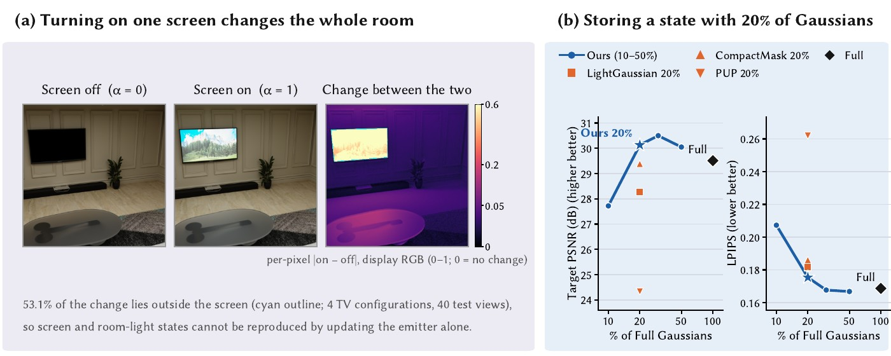

EmiState-HDR
A Synthetic Indoor HDR Multi-State Dataset and Learned Selection for Storing Observed Emissive States
1Sungkyunkwan University 2SFACSPACE 3Hongik University

Abstract
When a display or light in a room changes state, the walls and floor that receive its light change too. Revisiting observed emissive states from novel views requires one stored representation per state, yet no public indoor dataset with state-specific training views supports measuring how compactly an additional state can be stored.
We present EmiState-HDR, a synthetic high-dynamic-range dataset of four indoor scenes, 13 configurations and 26 state transitions, with disjoint training views per state, evaluation views shared by all states, intermediate-state ground truth with known state values, emissive-material masks, and a per-view linearity audit of the ground truth. With 3D Gaussian Splatting, keeping the same number of Gaussians from the same full target model under the same refinement, existing selection criteria span 5.06 dB in target-state PSNR. As a baseline for this protocol, EmiState-GS learns a per-Gaussian gate from the target observations and keeps exactly the specified number of Gaussians.
Dataset at a glance

| Scene | Configurations | Resolution | Samples | EXR | Local emitter |
|---|---|---|---|---|---|
| Cafe | 3 | 1200×1200 | 128 | half | menu board |
| Gallery | 3 | 1200×1200 | 128 | half | emissive picture frame |
| Transit | 3 | 1024×1024 | 128 | half | sign |
| TV | 4 | 1024×1024 | 1024 | float | screen |
- Unclipped HDR EXRs exactly as rendered, with intermediate states at α = 0.2, 0.5, 0.8 (TV: every 0.1).
- Camera poses, per-transition view splits, emissive-material masks, per-view audit results and per-image render settings.
- A real two-state Office capture (240 frames) with its COLMAP registration.
EmiState-GS baseline

EmiState-GS keeps one shared base-state model and, for each additional state, stores a target model reduced to a fixed fraction of the Gaussians. A per-Gaussian gate is learned from the target observations, exactly K Gaussians are retained, and the retained model is refined with the same schedule used for all compared selection criteria.
Download
pip install -U huggingface_hub
hf download logun99/EmiState-HDR --repo-type dataset --local-dir EmiState-HDRThe dataset is released under CC BY-NC 4.0. Scene assets come from BlenderKit and are not redistributed; only rendered results are released. The code will be released on this page.
Citation
@misc{lee2026emistatehdr,
title = {EmiState-HDR: A Synthetic Indoor HDR Multi-State Dataset and
Learned Selection for Storing Observed Emissive States},
author = {Lee, Hogeon and Ko, Jaerin and Lee, Jangwon},
year = {2026},
note = {Dataset: https://huggingface.co/datasets/logun99/EmiState-HDR}
}